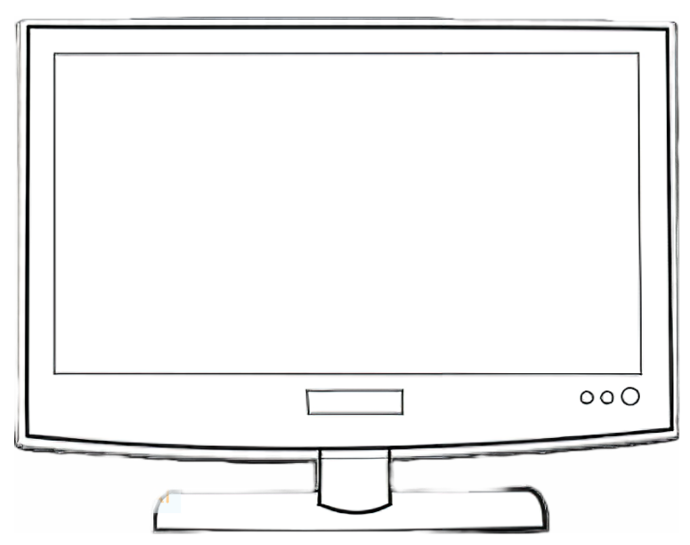

Controls
Red = Power
Blue = Skills
Green = Areas of Interest
Skills
- Java
- C++
- Python
- HTML, CSS, JavaScript
&emsp I learned these skills through
freeCodeCamp!
Areas of Interest
I am currently interested in the following:
- Frontend/Web Development: I enjoy seeing users directly interact with software that I've worked on
- Cybersecurity: I enjoy what I've learned so far from Cybersecurity club, and I would love to expand my knowledge in this area
- Artificial Intelligence: After taking apart in an introductory AI program, I am even more fascinated with the capitality and potential of machines.